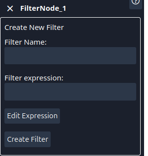
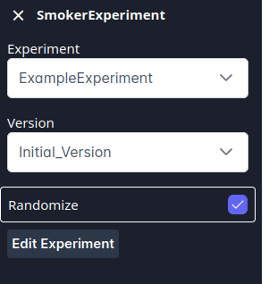
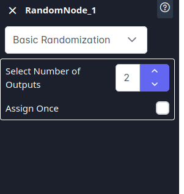
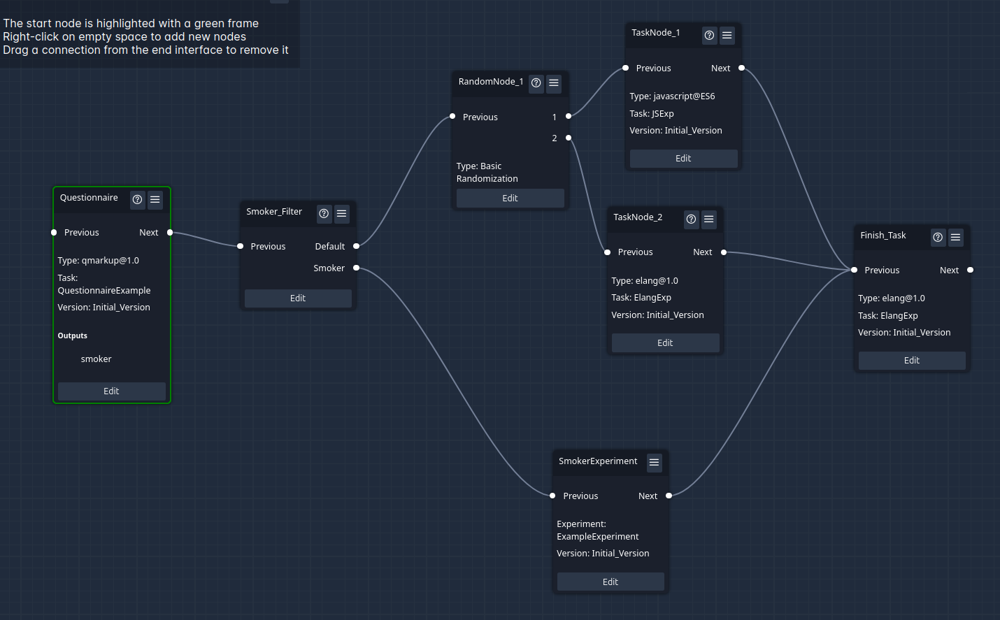

Quickstart : Project
This guide shows you how to set up a new project and how to use it in SOILE. Let’s begin
Initialize a new Project
To create a Project you go to Project Editing -> Project -> New, which will lead you a view similar to the experiment view. The overall setup is the same as for experiments, and you can do pretty much the same things in a project that you can do in an experiment. The main difference is that Experiments are conceptually more about grouping tasks together, while projects are the blueprints for studies. We will now create our first project AND look at a few features that we have passed by in the experiment setup.
Create your first project
What we want to do in the project is to: 1. Have an initial questionnaire. 2. Then, depending on whether we have a smoker or non smoker, we either want to run an experiment or just one of two tasks.
in the experiment we want to randomize the order of the tasks contained, as to not bias the results by the order
Finally we want both pathes to run a final Task, which is the same for smokers and non smokers.
Lets start by adding a Task Node to our project, naming it Questionnaire and setting it to “QuetionnaireExample” and the version to “Initial Version”. Next, add a filter node. Connect the Next of the Questionnaire to the Smoker Filter Click on Edit and select “Smoker” as Filter name. Click on Edit Expression and select the “Questionnaire.smoker”. This will generate a second output “Smoker” to the node.

Now we add an experiment Node to this project Connect the Smoker Output of the Filter to the SmokerExperiment. Edit this Experiment, setting The experiment to the one created in the Experiment Tutorial (or the example experiment).

Now, we add a RandomNode to the project and connect the default value of the Smoke Filter to its previous. We Set 2 outputs for the random node, to randomly have a Non smoker go to one of two tasks.

We now add two more Task Nodes and connect their previous to outputs 1 or 2 of the random node. We can select any task for these two nodes.
Finally we add a “finishing task” and connect the next of the experiment and the two random tasks to it.
This should lead to a view similar to the following.

Save your project and give it a try using the Run button.